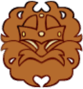

Olen tuore tietojenkäsittelyn opiskelija ja intohimoinen ohjelmoija Haaga-Helian ammattikorkeakoulusta.
Rakastan C++ tehokkuutta ja estetiikkaa, mutta olen myös innokas laajentamaan osaamistani uusiin kieliin,
kuten Pythoniin ja JavaScriptiin.
Lisäksi cloud-teknologia ja tietoturva ovat vahvasti kiinnostukseni kohteina. Ohjelmointimatkani alkoi jo
nuorena Commodore 64:lla, ja siitä lähtien olen pyrkinyt luomaan elegantteja ja optimoituja ratkaisuja.
Ravintola-alalta minulla on 20 vuoden kokemus, joista suurin osa vuoropäällikkönä, mikä on tuonut vahvat
tiimityöskentely- ja johtamistaidot.
työhistoria
Vuoropäällikkö
William K. Kurvi · Vakituinen12 / 2021 — 06 / 2023 · 1 vuosi 7 kkHelsinkiTehtäviin kuului tuotevalikoiman suunnittelu, kehitys ja ylläpito sekä vuoroesimiestyö.

Vuoropäällikkö ja tarjoilija
Suomalainen Olutravintola Villi Wäinö · Vakituinen01 / 2009 — 08 / 2020 · 11 vuotta 8 kkHelsinkiTarjoilija kaksi vuotta, sittemmin vuoropäällikkö. Tehtäviin kuului tuotevalikoiman kehitys, varaston ylläpito; vuoroesimiestyö ja henkilökunnan perehdyttäminen; markkinointimateriaalin sekä internet-sivujen kehitys ja ylläpito.